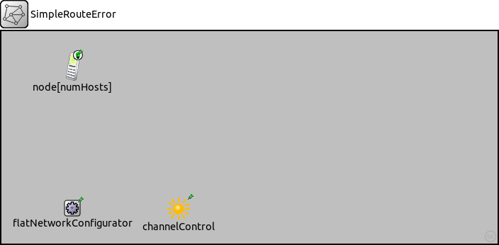
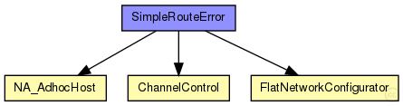
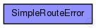

This documentation is released under the Creative Commons license
This documentation is released under the Creative Commons license(no description)
The following diagram shows usage relationships between types. Unresolved types are missing from the diagram.
The following diagram shows inheritance relationships for this type. Unresolved types are missing from the diagram.
| Name | Type | Default value | Description |
|---|---|---|---|
| numHosts | int |
| Name | Value | Description |
|---|---|---|
| isNetwork | ||
| display | bgb=700,300,grey75 |
| Name | Type | Default value | Description |
|---|---|---|---|
| node.networkLayer.ip.procDelay | double | 0s | |
| node.networkLayer.ip.timeToLive | int | 32 | |
| node.networkLayer.ip.multicastTimeToLive | int | 32 | |
| node.networkLayer.ip.fragmentTimeout | double | 60s | |
| node.networkLayer.ip.forceBroadcast | bool | false | |
| node.networkLayer.arp.retryTimeout | double | 1s |
number seconds ARP waits between retries to resolve an IPv4 address |
| node.networkLayer.arp.retryCount | int | 3 |
number of times ARP will attempt to resolve an IPv4 address |
| node.networkLayer.arp.cacheTimeout | double | 120s |
number seconds unused entries in the cache will time out |
| node.networkLayer.arp.globalARP | bool | false | |
| node.routingTable.routerId | string | "auto" |
for routers, the router id using IPv4 address dotted notation; specify "auto" to select the highest interface address; should be left empty ("") for hosts |
| node.routingTable.forwardMulticast | bool | false |
turns multicast forwarding on/off |
| node.interfaceTable.displayAddresses | bool | true |
whether to display IP addresses on links |
| node.pcapRecorder.verbose | bool | false |
whether to log packets on the module output |
| node.pcapRecorder.pcapFile | string | "" |
the PCAP file to be written |
| node.pcapRecorder.snaplen | int | 65535 |
maximum number of bytes to record per packet |
| node.pcapRecorder.dumpBadFrames | bool | true |
enable dump of frames with hasBitError |
| node.pcapRecorder.moduleNamePatterns | string | "wlan[*] eth[*] ppp[*] ext[*]" |
space-separated list of sibling module names to listen on |
| node.pcapRecorder.sendingSignalNames | string | "packetSentToLower" |
space-separated list of outbound packet signals to subscribe to |
| node.pcapRecorder.receivingSignalNames | string | "packetReceivedFromLower" |
space-separated list of inbound packet signals to subscribe to |
| flatNetworkConfigurator.networkAddress | string | "192.168.0.0" |
network part of the address (see netmask parameter) |
| flatNetworkConfigurator.netmask | string | "255.255.0.0" |
host part of addresses are autoconfigured |
| channelControl.coreDebug | bool | false |
debug switch for core framework |
| channelControl.pMax | double | 20mW |
maximum sending power used for this network (in mW) |
| channelControl.sat | double | -110dBm |
signal attenuation threshold (in dBm) |
| channelControl.alpha | double | 2 |
path loss coefficient |
| channelControl.carrierFrequency | double | 2.4GHz |
base carrier frequency of all the channels (in Hz) |
| channelControl.numChannels | int | 1 |
number of radio channels (frequencies) |
| channelControl.propagationModel | string | "FreeSpaceModel" |
network SimpleRouteError { parameters: int numHosts; @display("bgb=700,300,grey75"); submodules: node[numHosts]: NA_AdhocHost { @display("p=100,50"); } flatNetworkConfigurator: FlatNetworkConfigurator { @display("p=100,250"); } channelControl: ChannelControl { @display("p=250,250;i=misc/sun"); } //connections allowunconnected: }
This documentation is released under the Creative Commons license